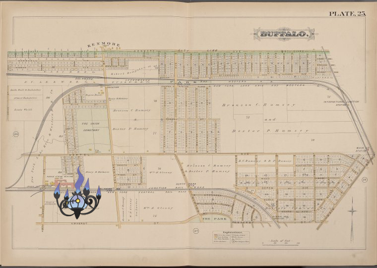
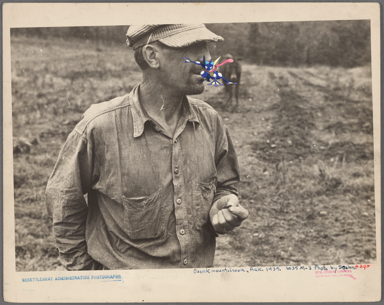
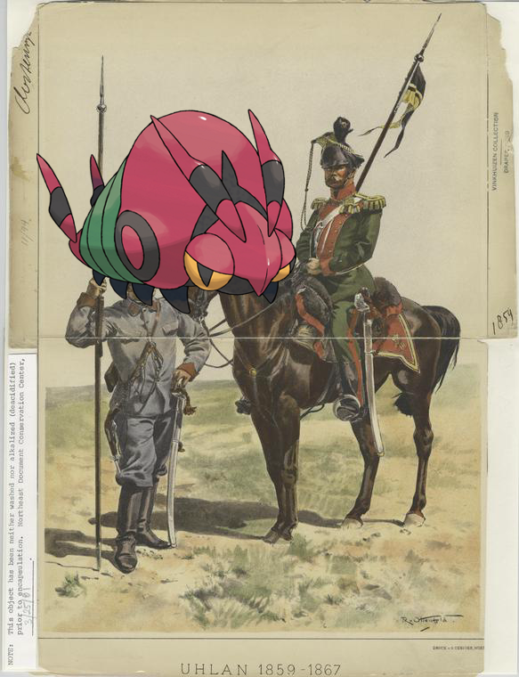
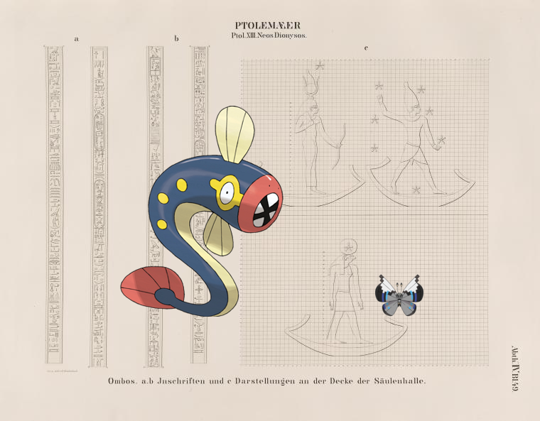
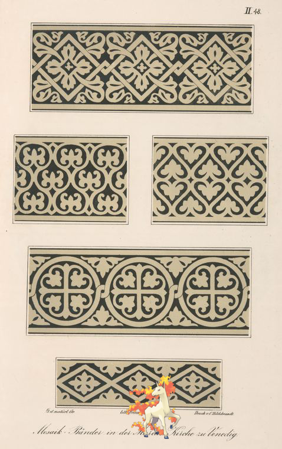
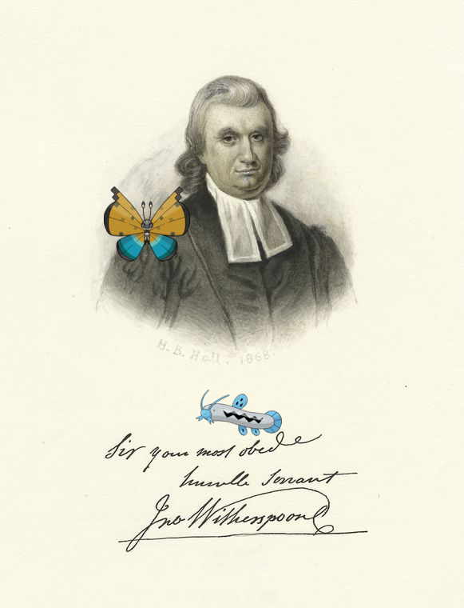
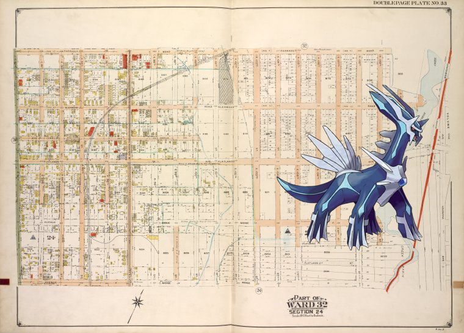
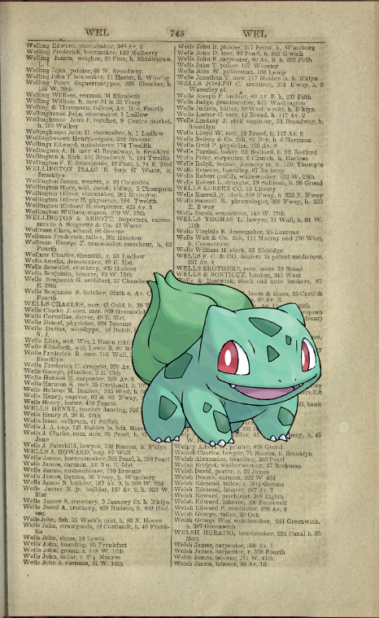

Pokémon in the NYPL archives
2018-5-13 10:10:04

Chandelure on
Buffalo, Double Page Plate No. 25 [Map bounded by Kenmore Ave., Main St., Amherst St., N. Elmwood Ave., Grove St.]
2018-5-13 08:10:09

Greninja ;
Ozark mountaineer, Arkansas
.
2018-5-13 06:10:03

Venipede on
Uhlan 1859-1867
!
2018-5-13 04:10:04

, Eelektrik ;
Ptolemaeer. Ptol. XIII. Neos Dionysos. Ombos: a.b. Inschriften und c. Darschtellungen an der Decke der Säulenhalle.
.
2018-5-13 02:10:06

Rapidash –
Mosaik-Bänder in der Markus-Kirche zu Venedig
!
2018-5-13 00:10:04

Barboach, +
John Witherspoon
.
2018-5-12 22:10:05
Poochyena, Krookodile @
Ma says I can't go for a ride
.
2018-5-12 20:10:04

Dialga on
Brooklyn, Vol. 3, Double Page Plate No. 33; Part of Ward 32, Section 24; [Map bounded by Farragut Rd., Louisiana Ave.; Including Avenue K, E. 92nd St.]
.
2018-5-12 18:10:05

Bulbasaur on
[W-W]
.
25
|
24
|
23
|
22
|
21
|
20
|
19
|
18
|
17
|
16
|
15
|
14
|
13
|
12
|
11
|
10
|
9
|
8
|
7
|
6
|
5
|
4
|
3
|
2
|
1
|
0